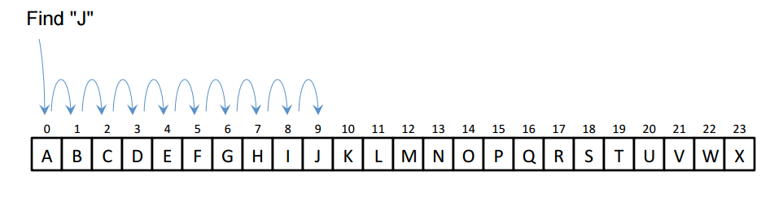
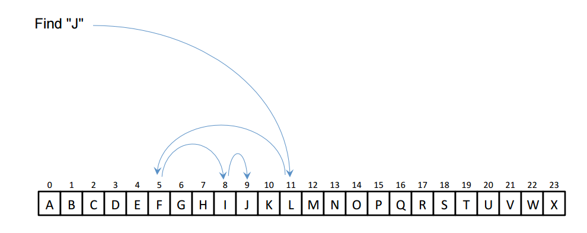

Searching
Searching is the process of finding an element within a data structure. There are two common ways to search a list, linear search and binary search.Linear search

Linear search. Source: geeksforgeeks.org
The average and worst-case runtime is O(n) because you do at most n comparisons, and n/2 comparisons on average.
The best-case runtime is O(1) (when the target value is the first element).
Binary search

Binary search. Source: geeksforgeeks.org
BinarySearch
Binary search finds a value within a sorted array. First it compares the value to the middle element.
Based on the result of this comparison, half the array is eliminated, and the remaining half is searched.
Half the array is eliminated in each iteration, so the average and worst-case runtime is O(logn).
Binary search is not efficient for linked lists because we have no fast way to reach the middle element.
Interpolation search
Interpolation search is similar to binary search, but instead of comparing to the middle element,we try to predict where the value should be in the remaining section of the list.
This is similar to how people find words in a dictionary. If you're looking for a word that starts with b, you don't start in the middle, you start closer to the beginning.
The worst-case runtime is O(n), but if the elements are uniformly distributed then the average-case runtime is O(loglogn).